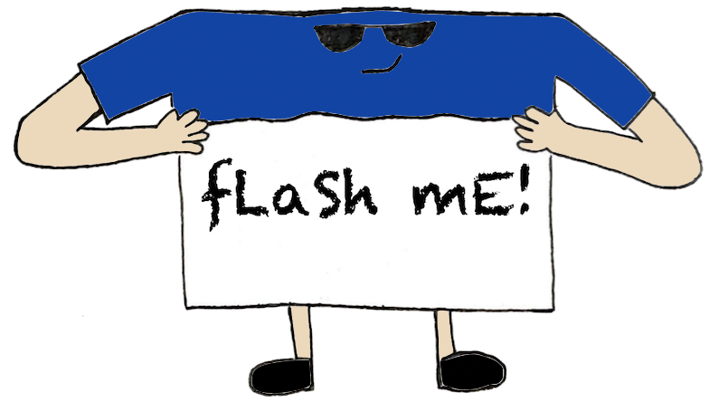

About fLaSh mE!

This study tool is the best way for you to remember what you need to remember, whether it's Computer Science terms, History terms, Biology terms, ANYTHING!
And, the best part is: IT'S FREE!!!
Created by: Shannon Chu, Max Lindquist, and Jerome Romualdez (hoo came up with this ingenious name 😎)
Sign up NOW!